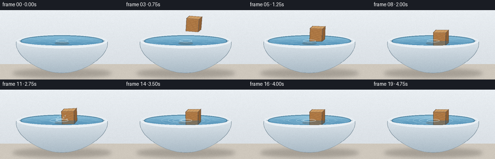
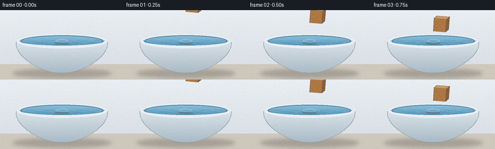

CODING AGENTS AS PIXEL WORLD MODELS
traex/Seed-2.1-Pro-0915 · phygen_009
点击播放 · 原生 RGB 像素
逐轮保存的候选
回放视频、检查图与代码变化。
每份候选均可单独播放。实际图片检查记录在下方工具轨迹中。
候选 01播放与检查图
点击播放 · 原生 RGB 像素


展开代码变化
--- 上一保存版本
+++ 本次保存版本
@@ -0,0 +1,314 @@
+"""Procedural text-to-video renderer.
+
+Scene: a wooden block is gently placed on the water surface of a filled bowl.
+Pure numpy + PIL, rendered at 2x supersampling and downscaled to 256x144.
+"""
+from pathlib import Path
+
+import numpy as np
+from PIL import Image, ImageDraw, ImageFilter
+
+import artifact_io
+
+W, H, N, FPS = 256, 144, 20, 4.0
+S = 2 # supersampling factor
+rng = np.random.default_rng(21)
+
+# Bowl / water geometry (1x coordinates)
+RIM = np.array([128.0, 64.0])
+RIM_RX, RIM_RY = 94.0, 15.0
+WATER_RX, WATER_RY = 86.0, 12.0
+BOWL_BOTTOM = np.array([128.0, 130.0])
+
+# Block geometry
+A = 26.0 # cube edge
+D = 6.0 # pseudo-3D top/right offset
+BX = 128.0 # anchor x (bottom center of front face)
+BY_REST = 73.0 # anchor y when floating (partly behind front rim)
+T_CONTACT = 2.25 # seconds
+
+
+def sc(p):
+ """Scale a point/array to supersampled resolution."""
+ return np.asarray(p, dtype=float) * S
+
+
+def cubic_bezier(p0, p1, p2, p3, n=40):
+ t = np.linspace(0, 1, n)[:, None]
+ mt = 1 - t
+ return (mt**3 * p0 + 3 * mt**2 * t * p1 + 3 * mt * t**2 * p2 + t**3 * p3)
+
+
+def gradient_polygon(size, polygon, top_color, bottom_color, y_top, y_bottom):
+ """RGBA layer with a vertical gradient clipped to a polygon."""
+ mask = Image.new("L", size, 0)
+ md = ImageDraw.Draw(mask)
+ md.polygon([tuple(sc(p)) for p in polygon], fill=255)
+ ys = np.arange(size[1], dtype=float)[:, None]
+ f = np.clip((ys - y_top * S) / max(1.0, (y_bottom - y_top) * S), 0, 1)
+ grad = np.zeros((size[1], size[0], 4), dtype=np.uint8)
+ for c in range(3):
+ grad[:, :, c] = (top_color[c] * (1 - f) + bottom_color[c] * f).astype(np.uint8)
+ grad[:, :, 3] = 255
+ layer = Image.composite(Image.fromarray(grad, "RGBA"), Image.new("RGBA", size, (0, 0, 0, 0)), mask)
+ return layer
+
+
+def ellipse_mask(size, center, rx, ry):
+ mask = Image.new("L", size, 0)
+ d = ImageDraw.Draw(mask)
+ x, y = sc(center)
+ d.ellipse([x - rx * S, y - ry * S, x + rx * S, y + ry * S], fill=255)
+ return mask
+
+
+def rotate_about(point, center, angle):
+ c, s = np.cos(angle), np.sin(angle)
+ v = np.asarray(point, dtype=float) - center
+ return center + np.array([c * v[0] - s * v[1], s * v[0] + c * v[1]])
+
+
+def bowl_outline():
+ left = RIM + [-RIM_RX, 0]
+ right = RIM + [RIM_RX, 0]
+ seg1 = cubic_bezier(left, left + [-8, 30], BOWL_BOTTOM + [-42, 2], BOWL_BOTTOM, 36)
+ seg2 = cubic_bezier(BOWL_BOTTOM, BOWL_BOTTOM + [42, 2], right + [8, 30], right, 36)
+ return np.vstack([seg1, seg2[1:], right, left])
+
+
+def block_polys(by, angle):
+ """Return face polygons in world coordinates."""
+ anchor = np.array([BX, by])
+ p00 = anchor + np.array([0.0, 0.0])
+ p10 = anchor + np.array([A, 0.0])
+ p11 = anchor + np.array([A, -A])
+ p01 = anchor + np.array([0.0, -A])
+ off = np.array([D, -D])
+ front = [p00, p10, p11, p01]
+ top = [p01, p01 + off, p11 + off, p11]
+ right = [p10, p10 + off, p11 + off, p11]
+ rot = lambda pts: [rotate_about(p, anchor, angle) for p in pts]
+ return {"front": rot(front), "top": rot(top), "right": rot(right)}, anchor
+
+
+def draw_wood_block(base, by, angle, t):
+ polys, anchor = block_polys(by, angle)
+ mask = Image.new("L", base.size, 0)
+ md = ImageDraw.Draw(mask)
+ for pts in polys.values():
+ md.polygon([tuple(sc(p)) for p in pts], fill=255)
+
+ layer = Image.new("RGBA", base.size, (0, 0, 0, 0))
+ d = ImageDraw.Draw(layer)
+ colors = {
+ "top": (207, 158, 101, 255),
+ "front": (176, 122, 69, 255),
+ "right": (141, 94, 50, 255),
+ }
+ for name, pts in polys.items():
+ d.polygon([tuple(sc(p)) for p in pts], fill=colors[name])
+
+ # Wood grain on the front face (local coordinates, then rotated like the cube)
+ grain = Image.new("RGBA", base.size, (0, 0, 0, 0))
+ gd = ImageDraw.Draw(grain)
+ for k in range(1, 7):
+ v = -A * k / 7.0
+ ups = np.linspace(1.5, A - 1.5, 24)
+ pts = []
+ for u in ups:
+ local = anchor + np.array([u, v + 1.1 * np.sin(u * 0.55 + k * 1.7)])
+ pts.append(tuple(sc(rotate_about(local, anchor, angle))))
+ gd.line(pts, fill=(116, 74, 38, 70), width=max(1, S))
+ # A few soft streaks on the top face
+ top = polys["top"]
+ for k in range(1, 4):
+ f = k / 4.0
+ a = top[0] * (1 - f) + top[3] * f
+ b = top[1] * (1 - f) + top[2] * f
+ gd.line([tuple(sc(a)), tuple(sc(b))], fill=(120, 80, 42, 45), width=max(1, S))
+ layer = Image.alpha_composite(layer, grain)
+
+ # Edge shading
+ ed = ImageDraw.Draw(layer)
+ for pts in polys.values():
+ ed.line([tuple(sc(p)) for p in pts] + [tuple(sc(pts[0]))], fill=(92, 58, 30, 200), width=S)
+
+ base.alpha_composite(layer)
+ return mask, polys, anchor
+
+
+def render_frame(i):
+ t = i / FPS
+ size = (W * S, H * S)
+
+ # --- Background gradient ---
+ bg = np.zeros((H * S, W * S, 4), dtype=np.uint8)
+ yy = np.linspace(0, 1, H * S)[:, None]
+ top = np.array([233, 238, 242])
+ bot = np.array([214, 220, 226])
+ for c in range(3):
+ bg[:, :, c] = (top[c] * (1 - yy) + bot[c] * yy).astype(np.uint8)
+ bg[:, :, 3] = 255
+ img = Image.fromarray(bg, "RGBA")
+
+ # --- Table surface ---
+ table = Image.new("RGBA", size, (0, 0, 0, 0))
+ td = ImageDraw.Draw(table)
+ ty = int(112 * S)
+ td.rectangle([0, ty, W * S, H * S], fill=(206, 199, 188, 255))
+ img = Image.alpha_composite(img, table)
+
+ # Soft contact shadow under the bowl
+ shadow = Image.new("RGBA", size, (0, 0, 0, 0))
+ sd = ImageDraw.Draw(shadow)
+ sx, sy = sc([128, 131])
+ sd.ellipse([sx - 102 * S, sy - 9 * S, sx + 102 * S, sy + 9 * S], fill=(60, 55, 48, 70))
+ shadow = shadow.filter(ImageFilter.GaussianBlur(4 * S))
+ img = Image.alpha_composite(img, shadow)
+
+ # --- Bowl body ---
+ body = bowl_outline()
+ body_layer = gradient_polygon(size, body, (222, 230, 236), (168, 185, 197), 60, 132)
+ bd = ImageDraw.Draw(body_layer)
+ bd.line([tuple(sc(p)) for p in body] + [tuple(sc(body[0]))], fill=(132, 150, 162, 255), width=S)
+ img = Image.alpha_composite(img, body_layer)
+
+ # Back half of the rim (behind the water opening)
+ rim_layer = Image.new("RGBA", size, (0, 0, 0, 0))
+ rd = ImageDraw.Draw(rim_layer)
+ rc = sc(RIM)
+ rbbox = [rc[0] - RIM_RX * S, rc[1] - RIM_RY * S,
+ rc[0] + RIM_RX * S, rc[1] + RIM_RY * S]
+ rd.arc(rbbox, start=180, end=360, fill=(230, 237, 242, 255), width=5 * S)
+ img = Image.alpha_composite(img, rim_layer)
+
+ # --- Water surface ---
+ wmask = ellipse_mask(size, RIM, WATER_RX, WATER_RY)
+ water = Image.new("RGBA", size, (0, 0, 0, 0))
+ wgrad = np.zeros((H * S, W * S, 4), dtype=np.uint8)
+ f = np.clip((np.arange(H * S)[:, None] - (RIM[1] - WATER_RY) * S) / (2 * WATER_RY * S), 0, 1)
+ for c, (a, b) in enumerate(zip((142, 195, 221), (74, 137, 176))):
+ wgrad[:, :, c] = (a * (1 - f) + b * f).astype(np.uint8)
+ wgrad[:, :, 3] = 255
+ water = Image.composite(Image.fromarray(wgrad, "RGBA"), water, wmask)
+
+ # Animated wavy highlight streaks
+ hl = Image.new("RGBA", size, (0, 0, 0, 0))
+ hd = ImageDraw.Draw(hl)
+ for k in range(3):
+ pts = []
+ for x in np.linspace(RIM[0] - WATER_RX + 6, RIM[0] + WATER_RX - 6, 40):
+ y = RIM[1] - 4 + k * 5 + 1.3 * np.sin(x * 0.18 + t * 1.7 + k * 2.1)
+ pts.append(tuple(sc([x, y])))
+ hd.line(pts, fill=(214, 238, 247, 60), width=S)
+ hl = Image.composite(hl, Image.new("RGBA", size, (0, 0, 0, 0)), wmask)
+ water = Image.alpha_composite(water, hl)
+
+ # Dark perimeter ring inside the opening
+ ring = Image.new("RGBA", size, (0, 0, 0, 0))
+ hd2 = ImageDraw.Draw(ring)
+ cx, cy = sc(RIM)
+ hd2.ellipse([cx - WATER_RX * S, cy - WATER_RY * S, cx + WATER_RX * S, cy + WATER_RY * S],
+ outline=(30, 74, 102, 110), width=2 * S)
+ ring = Image.composite(ring, Image.new("RGBA", size, (0, 0, 0, 0)), wmask)
+ water = Image.alpha_composite(water, ring)
+
+ # --- Ripples (born at contact, expanding, clipped to the water) ---
+ rip = Image.new("RGBA", size, (0, 0, 0, 0))
+ rdraw = ImageDraw.Draw(rip)
+ if t >= T_CONTACT:
+ for k in range(6):
+ age = t - T_CONTACT - k * 0.38
+ if age <= 0 or age > 1.9:
+ continue
+ rx = min(WATER_RX - 4, 8 + age * 34)
+ ry = rx * 0.18
+ alpha = int(150 * (1 - age / 1.9))
+ ox = 2.0 * np.sin(k * 2.4)
+ x0, y0 = sc(RIM + [ox, 0])
+ rdraw.ellipse([x0 - rx * S, y0 - ry * S, x0 + rx * S, y0 + ry * S],
+ outline=(226, 244, 250, alpha), width=S)
+ rip = Image.composite(rip, Image.new("RGBA", size, (0, 0, 0, 0)), wmask)
+ water = Image.alpha_composite(water, rip)
+ img = Image.alpha_composite(img, water)
+
+ # --- Block motion: gentle decelerating descent + damped bob ---
+ u = np.clip(t / T_CONTACT, 0, 1)
+ by = BY_REST + (-100.0) * (1 - u) ** 3
+ angle = 0.10 * (1 - u) # slight approach tilt
+ if t > T_CONTACT:
+ dt_ = t - T_CONTACT
+ by += 2.4 * np.exp(-dt_ / 0.7) * np.sin(2 * np.pi * 1.5 * dt_)
+ angle += 0.09 * np.exp(-dt_ / 0.8) * np.sin(2 * np.pi * 1.2 * dt_ + 0.6)
+
+ # Soft contact shadow on the water beneath the block
+ refl = Image.new("RGBA", size, (0, 0, 0, 0))
+ rfd = ImageDraw.Draw(refl)
+ qx, qy = sc([BX, RIM[1] + 5])
+ rfd.ellipse([qx - 15 * S, qy - 3.2 * S, qx + 15 * S, qy + 3.2 * S], fill=(70, 48, 28, 55))
+ refl = Image.composite(refl, Image.new("RGBA", size, (0, 0, 0, 0)), wmask)
+ img = Image.alpha_composite(img, refl)
+
+ block_mask, polys, anchor = draw_wood_block(img, by, angle, t)
+
+ # Submerged tint: blue water over the part of the block below the surface line
+ if by - A < RIM[1]:
+ ta = np.zeros((H * S, W * S, 4), dtype=np.uint8)
+ ta[:, :] = (44, 102, 140, 95)
+ below = Image.new("L", size, 0)
+ bd2 = ImageDraw.Draw(below)
+ bd2.rectangle([0, int(RIM[1] * S), W * S, H * S], fill=255)
+ comb = Image.composite(block_mask, Image.new("L", size, 0), below)
+ tint = Image.composite(Image.fromarray(ta, "RGBA"), Image.new("RGBA", size, (0, 0, 0, 0)), comb)
+ tint = Image.composite(tint, Image.new("RGBA", size, (0, 0, 0, 0)), wmask)
+ img = Image.alpha_composite(img, tint)
+ # Meniscus ring hugging the block at the waterline
+ men = Image.new("RGBA", size, (0, 0, 0, 0))
+ md3 = ImageDraw.Draw(men)
+ mx, my = sc([BX, RIM[1]])
+ md3.ellipse([mx - 13 * S, my - 2.6 * S, mx + 13 * S, my + 2.6 * S],
+ outline=(220, 240, 248, 150), width=S)
+ men = Image.composite(men, Image.new("RGBA", size, (0, 0, 0, 0)), wmask)
+ img = Image.alpha_composite(img, men)
+
+ # --- Front rim (occludes the submerged block, sells the depth) ---
+ front = Image.new("RGBA", size, (0, 0, 0, 0))
+ fd = ImageDraw.Draw(front)
+ fd.arc(rbbox, start=0, end=180, fill=(232, 239, 244, 255), width=6 * S)
+ fd.arc([rbbox[0] + 2 * S, rbbox[1] + 2 * S, rbbox[2] - 2 * S, rbbox[3] - 2 * S],
+ start=10, end=170, fill=(255, 255, 255, 120), width=S)
+ img = Image.alpha_composite(img, front)
+
+ # --- Splash droplets at contact ---
+ if T_CONTACT <= t <= T_CONTACT + 0.9:
+ drop = Image.new("RGBA", size, (0, 0, 0, 0))
+ dd = ImageDraw.Draw(drop)
+ for k in range(7):
+ vx = (k - 3) * 7.5 + rng.normal(0, 1)
+ vy = -34 - (k % 3) * 7
+ age = t - T_CONTACT
+ x = BX + vx * age
+ y = RIM[1] - 2 + vy * age + 0.5 * 130 * age ** 2
+ a = int(220 * (1 - age / 0.9))
+ r = 1.3 * S
+ dx, dy = sc([x, y])
+ dd.ellipse([dx - r, dy - r, dx + r, dy + r], fill=(214, 238, 248, max(0, a)))
+ img = Image.alpha_composite(img, drop)
+
+ # Downscale and add a faint deterministic film grain
+ small = img.convert("RGB").resize((W, H), Image.LANCZOS)
+ arr = np.asarray(small).astype(np.int16)
+ noise = rng.integers(-3, 4, size=arr.shape[:2], dtype=np.int16)
+ arr = np.clip(arr + noise[:, :, None], 0, 255).astype(np.uint8)
+ return arr
+
+
+def main():
+ frames = np.stack([render_frame(i) for i in range(N)], axis=0)
+ case_dir = Path(__file__).parent
+ artifact_io.save(frames, case_dir)
+ print(f"Saved {frames.shape} video to {case_dir}")
+
+
+if __name__ == "__main__":
+ main()
可观测工具轨迹
实际执行的命令与返回图片。
命令 1exit 0
/bin/bash -lc 'cat prompt.txt GENERATION_RULES.md task_spec.json'
命令 2exit 0
/bin/bash -lc 'ls -la; find . -maxdepth 3 -type f | head -50'
命令 3exit 0
/bin/bash -lc 'cat artifact_io.py'
命令 4exit 0
/bin/bash -lc 'cd . && python generate.py && ls -la'
保存候选 1 份；完成命令 4 次；可验证图片返回 0 张。原始 API 响应与完整日志保留在本地。